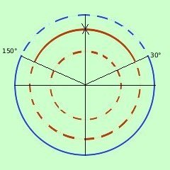

|
Risolvere la disequazione 2 cos2x + 3 senx - 3 > 0 Poiche' abbiamo cos2x cerchiamo di trasformare le funzioni in un unico tipo ricordando la prima relazione fondamentale (cos2x = 1 - sen2x) 2 (1 - sen2x) + 3 senx - 3 > 0 2 - 2sen2x + 3 senx - 3 > 0 - 2sen2x + 3 senx - 1 > 0 Cambio di segno e di verso 2sen2x - 3 senx + 1 < 0 considero l'equazione associata 2sen2x - 3 senx + 1 = 0 E' un'equazione di secondo grado in sen x; la risolvo
sen x = 1 sen x = 1/2 Quindi la mia disequazione diventa decomposizione del trinomio 2(sen x - 1)(sen x - 1/2) < 0 siccome 2 e' una costante positiva posso trascurarla (sen x - 1)(sen x - 1/2) < 0 E' un prodotto: sara' minore di zero quando i fattori avranno segno discorde (cioe' quando il primo fattore sara' positivo ed il secondo negativo o viceversa ) Pongo in un sistema entrambe i fattori maggiori di zero e trovo gli intervalli dove i segni sono discordi un piccolo ripasso sen x > 1/2
 Ora cerco le soluzioni discordi della prima e della seconda disequazione: riporto all'interno i due grafici trovati Indico in blu a linea continua dove sono concordi, in blu a linea tratteggiata dove sono discordi Raccogliendo ho quindi le soluzioni 30°<x <150° Non basta: devo controllare se ci sono soluzioni da escludere nell'intervallo: se sostituisco nell'equazione iniziale ad x il valore 90° ottengo 2 cos2x + 3 senx - 3 > 0 2 cos290° + 3 sen90° - 3 > 0 0 + 3 - 3 > 0 quindi devo escludere il valore x = 90° Quindi il risultato finale e' 30°< x <150° e x |